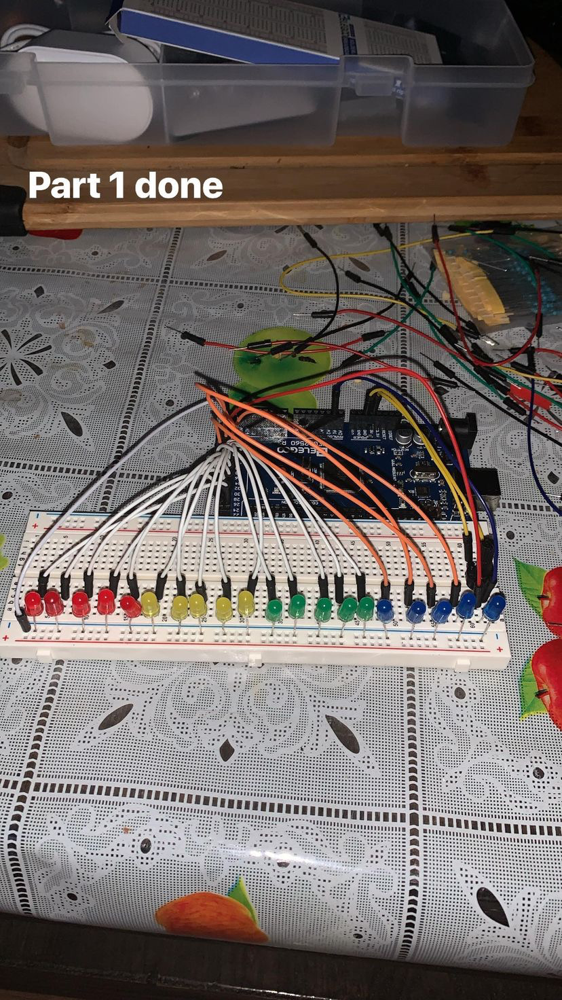
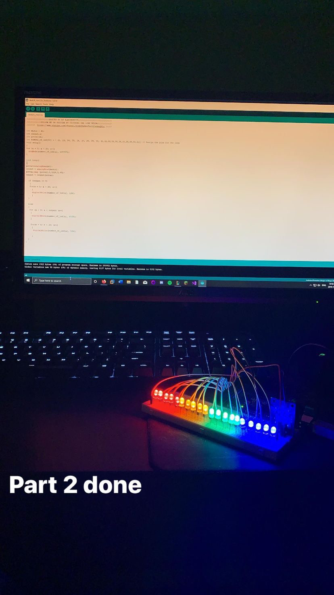
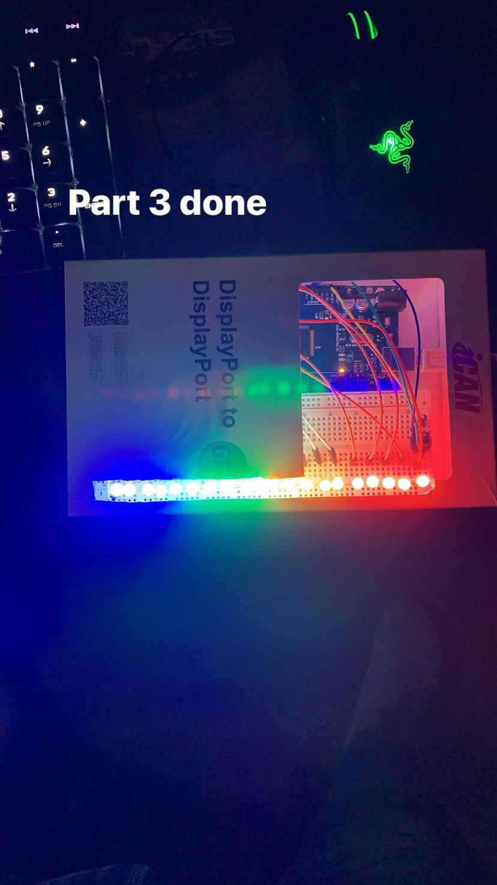
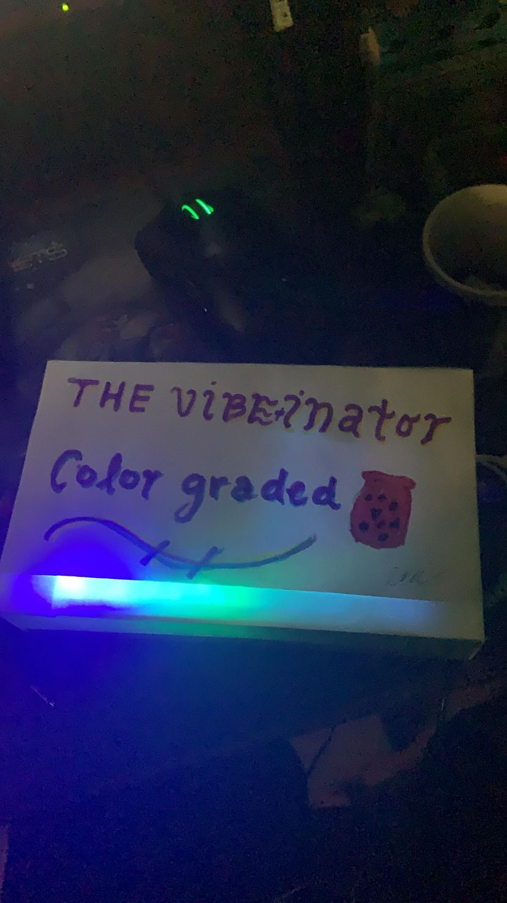

Arduino
Visualisation de musique
Ce projet était fait dans le cadre d'un cours de programmation pour arduino quand j'était au Cégep du Saint-Laurent. Étant dans un programme d'Internet et Robotique (Technologie de l’électronique – télécommunications), le but était de faire quelque chose avec notre arduino, la pluspart des gens se sont avancé et ont utilisé plusieurs languages de prog mais j'ai garder ça simple avec seulement le language d'arduino qui est simplement du C/C++
1. Assemblage du circuit
Pour la premiere partie, j'ai suivi un guide (que j'ai perdu lmao) pour construire et arranger les composantes, c'est telement simple que n'importe qui peut suivre. Un Arduino Mega 2560 ou Uno peut faire l'affaire, plusieurs LEDs, un potentiometre, des cables qui connecte les LEDs avec l'Arduino, une source d'alimentation comme un cable usb ou une batterie et le code injecté

2. Code
Puisqu'on etait en premiere session et notre focus n'etait pas vraiment la programmation, le prof nous a laisser utiliser des guides et de copier du code tant que l'on savait comment expliquer chaque partie du code. Mais le code Arduino est vraiment simple a cause des libraries qui font tout le travail faut juste indiquer ce que chaque composant fait, pensez python. Boff, faut juste écrire le code dans l'IDE de l'Arduino, le connecter puis l'injecter dans l'arduino.

3. Organiser
Maintenant faillait juste l'organiser et le mettre dans une boite pour faciliter son usage et son transport, (on ne veut pas que les composantes bouge ou se deplace)

4. Embellisage
C'est sure qu'on veut qu'il soit présentable et faillait que je trouve une façon de diffuser la lumiere des LEDs, c'est un peu fort pour les yeux...
